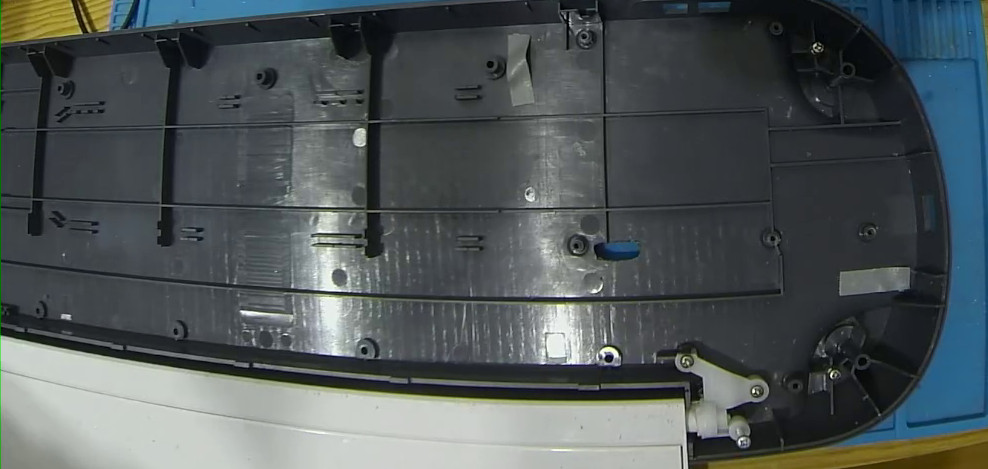
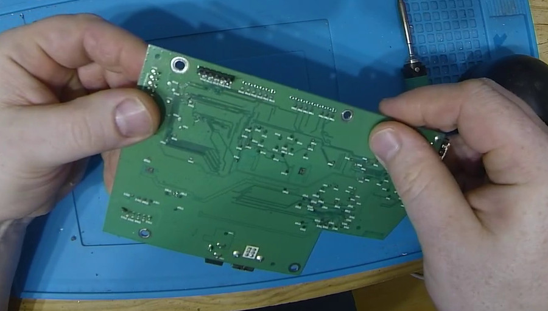
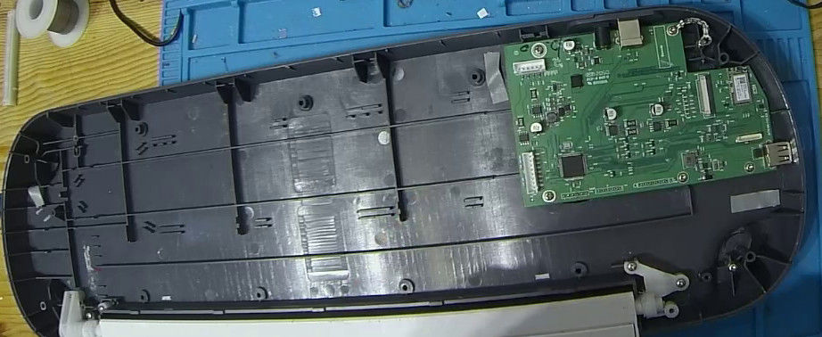
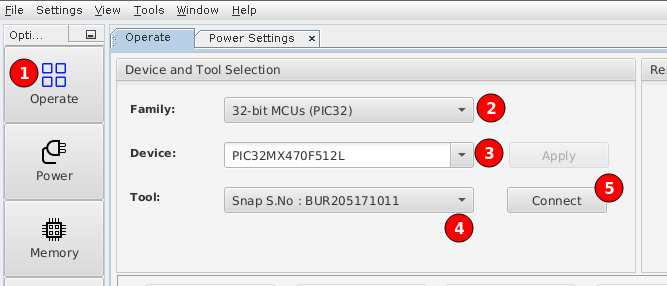
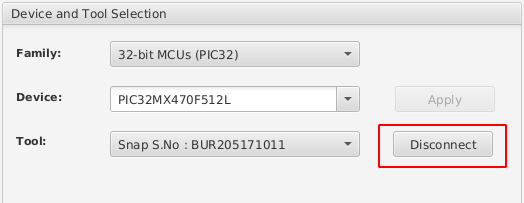
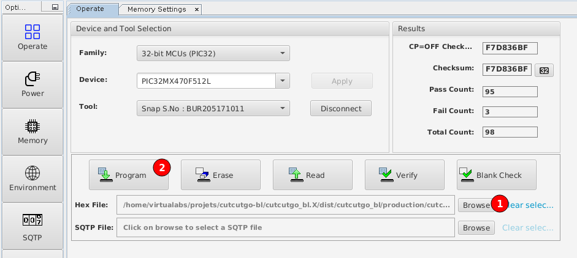
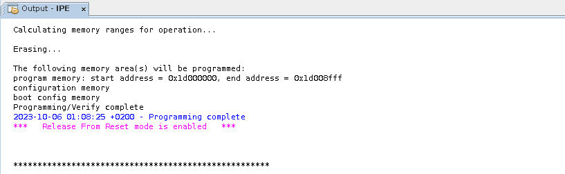
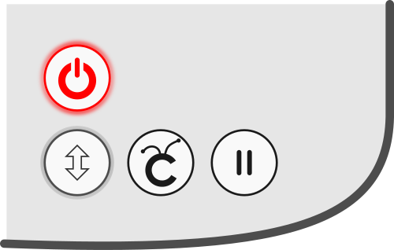
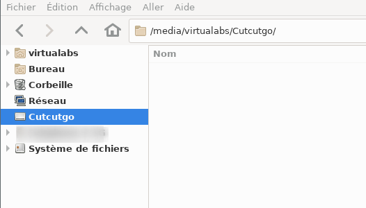
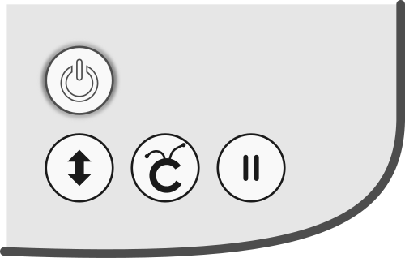

Flashing CutcutGo into your Cricut
Is my Cricut Maker Compatible ?
Machine |
Model # |
S/N begins with |
PCB revision |
PCB |
MCU Reference |
Compatible |
|---|---|---|---|---|---|---|
Maker 1 |
CXPL301 |
? |
ATH-84-100-X12 |
PICxxxxxxxxxxxx |
NOT YET |
|
Maker 1 |
CXPL301 |
Q |
ATH-84-112-X3 |
??? |
??? |
|
Maker 1 |
CXPL301 |
Q |
ATH-84-112-X3 |
PIC32MX470F512L |
YES |
|
Maker 1 |
CXPL301 |
T |
ATH-84-113-X1 |
PIC32MK1024MCF100 |
NOT YET |
|
Maker 3 |
CXPL303 |
M |
SCM-84-100-X7 |
|
PIC32MK1024MCF100 |
NOT YET |

{kind=link}
{kind=link}
{kind=link}
If you own a Maker 1 with ATH-84-100-X12, please share your serial number.
If you own a Maker with an unknown PCB, please share your serial number, pictures of your PCB, and the MCU reference if possible (using MPLAB IPE).
Prepare your Cricut Maker for programming
In order to access the debug port of your Cricut Maker’s PCB, you need to drill a hole at a very specific position as shown below (drilling guide will come pretty soon to help you).
{kind=link}
Solder a 6-pin male header to the main board debug interface on the bottom of the PCB, as shown below.
{kind=link}
Install the PCB back into the case and reassemble the device.
{kind=link}
Flashing the CutcutGo bootloader
First, download and install Microchip MPLABX on your system. You will only need MPLabX’ Integrated Programming Environment (IPE) utility to re-program the main micro-controller. Download the latest version of CutcutGo Bootloader and save it.
Connect 6 wires from the debug interface to a Microchip SNAP (or PicKit3), as shown below.

Connect your SNAP (or PicKit3) device into your computer, and launch MPLabX IPE.
{kind=link}
Follow these steps to connect your SNAP (or PicKit3) to MPLabX IPE:
Click on the Operate button on the left toolbar
Select the correct target MCU family: 32-bit MCUs (PIC32)
Pick your device in the dropdown list: PIC32MX470F512L
Select your programmer (SNAP or PicKit3) in the tool dropdown list. If your device is not recognized, check your USB configuration
Click the Connect button
If your programmer is correctly recognized and connected, you would see something like the following:
{kind=link}
When successfully connected, the Connect button turns into a Disconnect button.
Then, click on the Browse button as shown below and pick the bootloader hex file to program. Click the Program button to upload the boootloader into the target micro-controller.
{kind=link}
MPLabX IPE must outputs something like this:
{kind=link}
Flashing the CutcutGo application
{kind=link}
After flashing the bootloader, connect the Cricut Maker to your computer with an USB cable and power on the Cricut Maker by a long-press on the power button while also pressing the pause button. The power button will light up in red and the button below in white, indicating that the bootloader has started and is waiting for some application file to be programmed.
{kind=link}
The Cricut Maker must appear as a USB thumb drive named “CutcutGo” on your host, as shown below:
{kind=link}
Download the latest version of the CutcutGo application (UF2 file) to your computer and copy it into the Cutcutgo drive. The Cricut Maker LEDs will blink during the copy, and reset once programmed (all lEDs are then off).
Warning
An error may appear on the computer due to the sudden disconnection of the mass-storage device, but the firmware has been successfully programmed into the micro-controller.
Power up the Cricut Maker by a long-press on the power button, it will start the CutcutGo firmware and you should see the power button LED light up in white.
{kind=link}
Congratulations, you have successfully installed CutcutGo on your Cricut Maker !